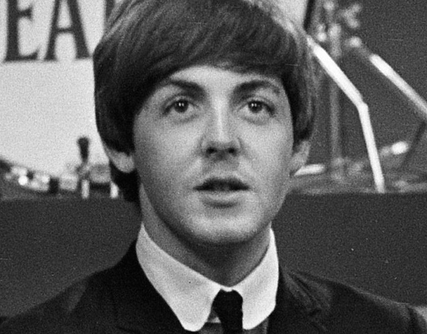

Tribute to Paul McCartney

"Se puede juzgar el verdadero carácter de un hombre por la forma en que trata a los animales"
TIMELINE
- Junio 18, 1942. Paul McCartney nace
- Julio 6, 1957. Se forma la banda "Los Beatles"
- Mayo 19, 1962. Los Beatles obtienen su primera firma
- Agosto 29, 1966. Ultimo Concierto